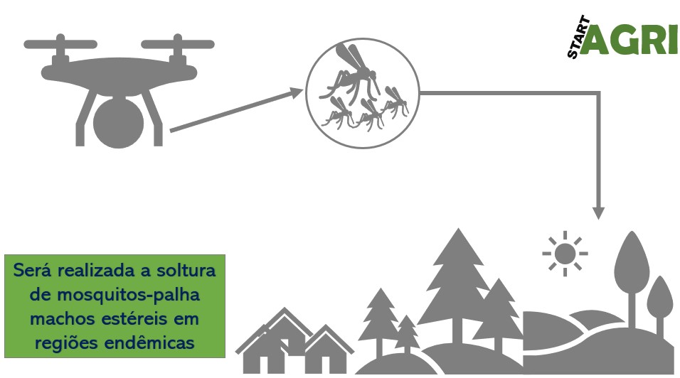
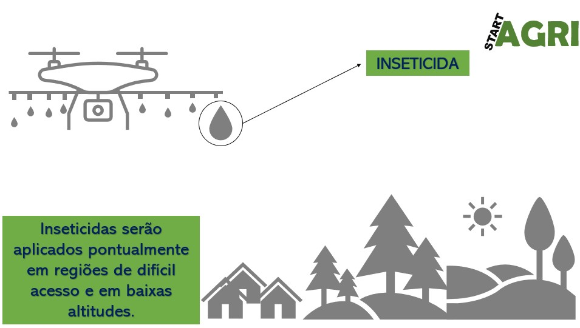

Voltar
Trabalhamos com três tipos de estratégias e produtos para controle do mosquito-palha
Aumento da população de machos estéreis

Pulverização em locais de difícil acesso

Protótipo de sensor de identificação do mosquito-palha